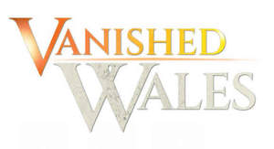

Trade Mark Journal No.2025/015 11 April 2025
UK00004178254 24 March 2025 (9,16,41)

- Class 9
- Sound and video recordings and downloads; recorded television programmes; motion pictures; cinematographic and photographic films; recorded programmes for broadcasting or other transmission on television, radio, electronic mobile devices, and on computers; downloadable media content, including video and films, television programmes, computer games, music, images and telephone ring tones provided by internet, telephone line, cable wireless transmission, satellite or terrestrial broadcast service; podcasts (downloadable); electronic publications; downloadable electronic books; audio books; e-books.
- Class 16
- Books; printed matter; periodicals; photographs; photograph albums; booklets; note books; note pads; personal organisers; calendars; diaries; magazines; posters; stationery; office requisites; pens; pencils; erasers; pencil sharpeners; greetings cards; writing sets; postcards; stickers; art prints; graphic prints; paintings [pictures], framed or unframed; portraits; beer mats .
- Class 41
- Entertainment; publishing services (including electronic publishing services); education; entertainment and education services in the form of television programmes, radio, cable, satellite and Internet programmes, webcasts, podcasts and musical performances; entertainment and education services by means of radio, television, telephony, the Internet, on-line databases and through the medium of television; production of radio and television programmes; production of shows (live and recorded); production of films; production of music; production of videos, videotapes and DVDs; production of audio, visual and audio visual material; organisation, production, presentation, provision and hosting of competitions, contests, games, quizzes, game shows, exhibitions, shows, festivals, staged events, concerts, live performances, studio entertainment, audience participation events, awards ceremonies, sporting activities and sporting competitions; post-production editing services in the field of music, videos and film; organisation, production and presentation of events for educational, cultural or entertainment purposes; dubbing; subtitling; editing of radio programmes, television programmes, films, motion pictures, television and online advertisements, pre-recorded video tapes, audio and visual material, pre-recorded video cassettes, DVDs or pre-recorded video discs; planning, development, maintenance and optimisation of digital video and multimedia content for third parties; information and advisory services relating to any of the aforesaid services.
ITV Broadcasting Limited
Representative: ITV Studios Limited